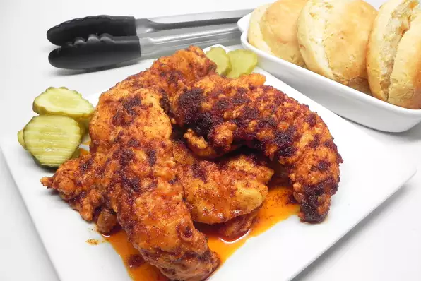

Hot Chicken and Biscuits

Description
Nashville Hot Chicken
I do not claim this hot chicken and biscuits recipe is authentic but I do claim it is delicious... and spicy!
Ingredients
2 pounds chicken breast tenderloins
1 (16.3 ounce) package 8-count refrigerated biscuit dough
1 tablespoon cayenne pepper
4 cups vegetable oil for frying
salt and ground black pepper to taste
Steps
Place chicken in a large, lidded bowl. Add milk and pickle juice. Cover and refrigerate for 4 hours.
Preheat the oven to 350 degrees F (175 degrees C). Place biscuits 1 inch apart on an ungreased baking sheet.
Bake in the preheated oven until golden brown, about 13 minutes. Set aside until ready to use.
Place flour in a large resealable plastic bag. Beat eggs in a shallow dish. Coat a piece of chicken in flour, dip in eggs, and then coat again in flour. Place on a plate and repeat with remaining chicken. Let coated chicken rest for 10 minutes.
Meanwhile, combine 1/3 cup oil, butter, cayenne pepper, paprika, and garlic powder in a small saucepan over low heat. Cook and stir until sugar is dissolved and sauce is heated through, about 5 minutes. Remove from heat
Heat 4 cups oil to 350 degrees F (175 degrees C) in a large cast iron skillet. Fry chicken in batches for 4 minutes, flip, and cook until golden brown, about 4 minutes more. Transfer to a plate lined with paper towels and season with salt and black pepper to taste.
Place fried chicken in a large bowl. Stir sauce in the saucepan and drizzle over the chicken. Serve chicken inside biscuits, topped with pickle slices.